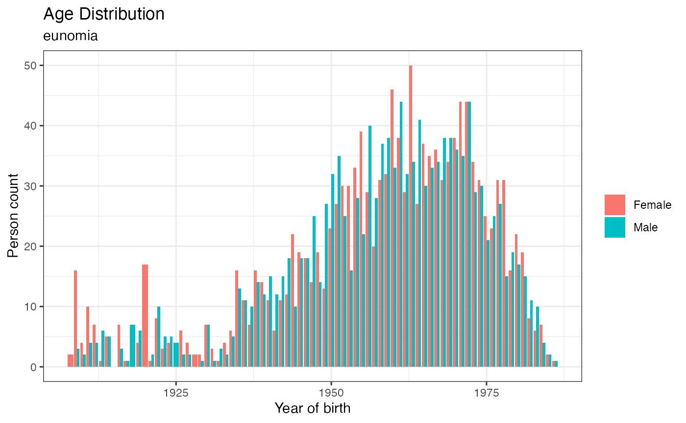

The Observational Medical Outcomes Partnership (OMOP) Common Data Model (CDM) is a commonly used format for storing and analyzing observational health data derived from electronic health records, insurance claims, registries, and other sources. Source data is “mapped” into the OMOP CDM format providing researchers with a standardized interface for querying and analyzing observational health data. The CDMConnector package provides tools for working with OMOP Common Data Model (CDM) tables using familiar dplyr syntax and using the tidyverse design principles popular in the R ecosystem.
This vignette is for new users of CDMConnector who have access to data already mapped into the OMOP CDM format. However, CDMConnector does provide several example synthetic datasets in the OMOP CDM format. To learn more about the OMOP CDM or the mapping process check out these resources.
Creating a reference to the OMOP CDM
Typically OMOP CDM datasets are stored in a database and can range in size from hundreds of patients with thousands of records to hundreds of millions of patients with billions of records. The Observational Health Data Science and Infromatics (OHDSI) community supports a selection of popular database platforms including Postgres, Microsoft SQL Server, Oracle, as well as cloud data platforms suchs as Amazon Redshift, Google Big Query, Databricks, and Snowflake. The first step in using CDMConnector is to create a connection to your database from R. This can take some effort the first time you set up drivers. See the “Database Connection Examples” vignette or check out the Posit’s database documentation.
In our example’s we will use some synthetic data from the Synthea project
that has been mapped to the OMOP CDM format. We’ll use the duckdb database which is a file based
database similar to SQLite but with better date type support. To see all
the example datasets available run exampleDatasets().
library(CDMConnector)
exampleDatasets()
#> Warning: `exampleDatasets()` was deprecated in CDMConnector 1.7.0.
#> ℹ Please use `exampleDatasets()` instead.
#> This warning is displayed once every 8 hours.
#> Call `lifecycle::last_lifecycle_warnings()` to see where this warning was
#> generated.
#> [1] "GiBleed" "synthea-allergies-10k"
#> [3] "synthea-anemia-10k" "synthea-breast_cancer-10k"
#> [5] "synthea-contraceptives-10k" "synthea-covid19-10k"
#> [7] "synthea-covid19-200k" "synthea-dermatitis-10k"
#> [9] "synthea-heart-10k" "synthea-hiv-10k"
#> [11] "synthea-lung_cancer-10k" "synthea-medications-10k"
#> [13] "synthea-metabolic_syndrome-10k" "synthea-opioid_addiction-10k"
#> [15] "synthea-rheumatoid_arthritis-10k" "synthea-snf-10k"
#> [17] "synthea-surgery-10k" "synthea-total_joint_replacement-10k"
#> [19] "synthea-veteran_prostate_cancer-10k" "synthea-veterans-10k"
#> [21] "synthea-weight_loss-10k" "synpuf-1k"
#> [23] "empty_cdm"
con <- DBI::dbConnect(duckdb::duckdb(), eunomiaDir("GiBleed"))
#> Warning: `eunomiaDir()` was deprecated in CDMConnector 1.7.0.
#> ℹ Please use `eunomiaDir()` instead.
#> This warning is displayed once every 8 hours.
#> Call `lifecycle::last_lifecycle_warnings()` to see where this warning was
#> generated.
DBI::dbListTables(con)
#> [1] "care_site" "cdm_source" "concept"
#> [4] "concept_ancestor" "concept_class" "concept_relationship"
#> [7] "concept_synonym" "condition_era" "condition_occurrence"
#> [10] "cost" "death" "device_exposure"
#> [13] "domain" "dose_era" "drug_era"
#> [16] "drug_exposure" "drug_strength" "fact_relationship"
#> [19] "location" "measurement" "metadata"
#> [22] "note" "note_nlp" "observation"
#> [25] "observation_period" "payer_plan_period" "person"
#> [28] "procedure_occurrence" "provider" "relationship"
#> [31] "source_to_concept_map" "specimen" "visit_detail"
#> [34] "visit_occurrence" "vocabulary"If you’re using CDMConnector for the first time you may get a message
about adding an enviroment vairable EUNOMIA_DATA_FOLDER .
To do this simply create a new text file in your home directory called
.Renviron and add the line
EUNOMIA_DATA_FOLDER="path/to/folder/where/we/can/store/example/data".
If you run usethis::edit_r_environ() this file will be
created and opened for you and opened in RStudio.
After connecting to a database containing data mapped to the OMOP
CDM, use cdm_from_con to create a CDM reference. This CDM
reference is a single object that contains dplyr table references to
each CDM table along with metadata about the CDM instance.
The cdm_schema is the schema in the database that contains the OMOP CDM tables and is required. All other arguments are optional.
cdm <- cdm_from_con(con, cdm_name = "eunomia", cdm_schema = "main", write_schema = "main")
#> Warning: `cdm_from_con()` was deprecated in CDMConnector 1.7.0.
#> ℹ Please use `cdmFromCon()` instead.
#> This warning is displayed once every 8 hours.
#> Call `lifecycle::last_lifecycle_warnings()` to see where this warning was
#> generated.
#> Note: method with signature 'DBIConnection#Id' chosen for function 'dbExistsTable',
#> target signature 'duckdb_connection#Id'.
#> "duckdb_connection#ANY" would also be valid
cdm
#>
#> ── # OMOP CDM reference (duckdb) of eunomia ────────────────────────────────────
#> • omop tables: person, observation_period, visit_occurrence, visit_detail,
#> condition_occurrence, drug_exposure, procedure_occurrence, device_exposure,
#> measurement, observation, death, note, note_nlp, specimen, fact_relationship,
#> location, care_site, provider, payer_plan_period, cost, drug_era, dose_era,
#> condition_era, metadata, cdm_source, concept, vocabulary, domain,
#> concept_class, concept_relationship, relationship, concept_synonym,
#> concept_ancestor, source_to_concept_map, drug_strength
#> • cohort tables: -
#> • achilles tables: -
#> • other tables: -
cdm$observation_period
#> # Source: table<main.observation_period> [?? x 5]
#> # Database: DuckDB v1.1.3 [root@Darwin 23.1.0:R 4.3.3//private/var/folders/2j/8z0yfn1j69q8sxjc7vj9yhz40000gp/T/Rtmp1xt6ak/file15b84318c5f5d.duckdb]
#> observation_period_id person_id observation_period_s…¹ observation_period_e…²
#> <int> <int> <date> <date>
#> 1 6 6 1963-12-31 2007-02-06
#> 2 13 13 2009-04-26 2019-04-14
#> 3 27 27 2002-01-30 2018-11-21
#> 4 16 16 1971-10-14 2017-11-02
#> 5 55 55 2009-05-30 2019-03-23
#> 6 60 60 1990-11-21 2019-01-23
#> 7 42 42 1909-11-03 2019-03-13
#> 8 33 33 1986-05-12 2018-09-10
#> 9 18 18 1965-11-17 2018-11-07
#> 10 25 25 2007-03-18 2019-04-07
#> # ℹ more rows
#> # ℹ abbreviated names: ¹observation_period_start_date,
#> # ²observation_period_end_date
#> # ℹ 1 more variable: period_type_concept_id <int>Individual CDM table references can be accessed using `$`.
cdm$person %>%
dplyr::glimpse()
#> Rows: ??
#> Columns: 18
#> Database: DuckDB v1.1.3 [root@Darwin 23.1.0:R 4.3.3//private/var/folders/2j/8z0yfn1j69q8sxjc7vj9yhz40000gp/T/Rtmp1xt6ak/file15b84318c5f5d.duckdb]
#> $ person_id <int> 6, 123, 129, 16, 65, 74, 42, 187, 18, 111,…
#> $ gender_concept_id <int> 8532, 8507, 8507, 8532, 8532, 8532, 8532, …
#> $ year_of_birth <int> 1963, 1950, 1974, 1971, 1967, 1972, 1909, …
#> $ month_of_birth <int> 12, 4, 10, 10, 3, 1, 11, 7, 11, 5, 8, 3, 3…
#> $ day_of_birth <int> 31, 12, 7, 13, 31, 5, 2, 23, 17, 2, 19, 13…
#> $ birth_datetime <dttm> 1963-12-31, 1950-04-12, 1974-10-07, 1971-…
#> $ race_concept_id <int> 8516, 8527, 8527, 8527, 8516, 8527, 8527, …
#> $ ethnicity_concept_id <int> 0, 0, 0, 0, 0, 0, 0, 0, 0, 0, 0, 0, 0, 0, …
#> $ location_id <int> NA, NA, NA, NA, NA, NA, NA, NA, NA, NA, NA…
#> $ provider_id <int> NA, NA, NA, NA, NA, NA, NA, NA, NA, NA, NA…
#> $ care_site_id <int> NA, NA, NA, NA, NA, NA, NA, NA, NA, NA, NA…
#> $ person_source_value <chr> "001f4a87-70d0-435c-a4b9-1425f6928d33", "0…
#> $ gender_source_value <chr> "F", "M", "M", "F", "F", "F", "F", "M", "F…
#> $ gender_source_concept_id <int> 0, 0, 0, 0, 0, 0, 0, 0, 0, 0, 0, 0, 0, 0, …
#> $ race_source_value <chr> "black", "white", "white", "white", "black…
#> $ race_source_concept_id <int> 0, 0, 0, 0, 0, 0, 0, 0, 0, 0, 0, 0, 0, 0, …
#> $ ethnicity_source_value <chr> "west_indian", "italian", "polish", "ameri…
#> $ ethnicity_source_concept_id <int> 0, 0, 0, 0, 0, 0, 0, 0, 0, 0, 0, 0, 0, 0, …You can then use dplyr to query the cdm tables just as you would an R
dataframe. The difference is that the data stays in the database and SQL
code is dynamically generated and set to the database backend. The goal
is to allow users to not think too much about the database or SQL and
instead use familiar R syntax to work with these large tables.
collect will bring the data from the database into R. Be
careful not to request a gigantic result set! In general it is better to
aggregate data in the database, if possible, before bringing data into
R.
library(dplyr)
#>
#> Attaching package: 'dplyr'
#> The following objects are masked from 'package:stats':
#>
#> filter, lag
#> The following objects are masked from 'package:base':
#>
#> intersect, setdiff, setequal, union
library(ggplot2)
cdm$person %>%
group_by(year_of_birth, gender_concept_id) %>%
summarize(n = n(), .groups = "drop") %>%
collect() %>%
mutate(sex = case_when(
gender_concept_id == 8532 ~ "Female",
gender_concept_id == 8507 ~ "Male"
)) %>%
ggplot(aes(y = n, x = year_of_birth, fill = sex)) +
geom_histogram(stat = "identity", position = "dodge") +
labs(x = "Year of birth",
y = "Person count",
title = "Age Distribution",
subtitle = cdm_name(cdm),
fill = NULL) +
theme_bw()
Joining tables
Since the OMOP CDM is a relational data model joins are very common in analytic code. All of the events in the OMOP CDM are recorded using integers representing standard “concepts”. To see the text description of a concept researchers need to join clinical tables to the concept vocabulary table. Every OMOP CDM should have a copy of the vocabulary used to map the data to the OMOP CDM format.
Here is an example query looking at the most common conditions in the CDM.
cdm$condition_occurrence %>%
count(condition_concept_id, sort = T) %>%
left_join(cdm$concept, by = c("condition_concept_id" = "concept_id")) %>%
collect() %>%
select("condition_concept_id", "concept_name", "n")
#> # A tibble: 80 × 3
#> condition_concept_id concept_name n
#> <int> <chr> <dbl>
#> 1 4116491 Escherichia coli urinary tract infection 482
#> 2 4113008 Laceration of hand 500
#> 3 4156265 Facial laceration 497
#> 4 4155034 Laceration of forearm 507
#> 5 4109685 Laceration of foot 484
#> 6 4094814 Bullet wound 46
#> 7 4048695 Fracture of vertebral column without spinal cord … 23
#> 8 40486433 Perennial allergic rhinitis 64
#> 9 4051466 Childhood asthma 96
#> 10 4142905 Fracture of rib 263
#> # ℹ 70 more rowsLet’s look at the most common drugs used by patients with “Acute viral pharyngitis”.
cdm$condition_occurrence %>%
filter(condition_concept_id == 4112343) %>%
distinct(person_id) %>%
inner_join(cdm$drug_exposure, by = "person_id") %>%
count(drug_concept_id, sort = TRUE) %>%
left_join(cdm$concept, by = c("drug_concept_id" = "concept_id")) %>%
collect() %>%
select("concept_name", "n")
#> # A tibble: 113 × 2
#> concept_name n
#> <chr> <dbl>
#> 1 Acetaminophen 325 MG / Hydrocodone Bitartrate 7.5 MG Oral Tablet 305
#> 2 {7 (Inert Ingredients 1 MG Oral Tablet) / 21 (Mestranol 0.05 MG / Nore… 997
#> 3 Penicillin V Potassium 250 MG Oral Tablet 1666
#> 4 Methylphenidate Hydrochloride 20 MG Oral Tablet 63
#> 5 Haemophilus influenzae type b vaccine, PRP-OMP conjugate 1295
#> 6 Ibuprofen 100 MG Oral Tablet 360
#> 7 Amoxicillin 500 MG Oral Tablet 246
#> 8 Naproxen 500 MG Oral Tablet 18
#> 9 Warfarin Sodium 5 MG Oral Tablet 135
#> 10 remifentanil 16
#> # ℹ 103 more rowsTo inspect the generated SQL use show_query from
dplyr.
cdm$condition_occurrence %>%
filter(condition_concept_id == 4112343) %>%
distinct(person_id) %>%
inner_join(cdm$drug_exposure, by = "person_id") %>%
count(drug_concept_id, sort = TRUE) %>%
left_join(cdm$concept, by = c("drug_concept_id" = "concept_id")) %>%
show_query()
#> <SQL>
#> SELECT
#> LHS.*,
#> concept_name,
#> domain_id,
#> vocabulary_id,
#> concept_class_id,
#> standard_concept,
#> concept_code,
#> valid_start_date,
#> valid_end_date,
#> invalid_reason
#> FROM (
#> SELECT drug_concept_id, COUNT(*) AS n
#> FROM (
#> SELECT
#> LHS.person_id AS person_id,
#> drug_exposure_id,
#> drug_concept_id,
#> drug_exposure_start_date,
#> drug_exposure_start_datetime,
#> drug_exposure_end_date,
#> drug_exposure_end_datetime,
#> verbatim_end_date,
#> drug_type_concept_id,
#> stop_reason,
#> refills,
#> quantity,
#> days_supply,
#> sig,
#> route_concept_id,
#> lot_number,
#> provider_id,
#> visit_occurrence_id,
#> visit_detail_id,
#> drug_source_value,
#> drug_source_concept_id,
#> route_source_value,
#> dose_unit_source_value
#> FROM (
#> SELECT DISTINCT person_id
#> FROM main.condition_occurrence
#> WHERE (condition_concept_id = 4112343.0)
#> ) LHS
#> INNER JOIN main.drug_exposure
#> ON (LHS.person_id = drug_exposure.person_id)
#> ) q01
#> GROUP BY drug_concept_id
#> ) LHS
#> LEFT JOIN main.concept
#> ON (LHS.drug_concept_id = concept.concept_id)These are a few simple queries. More complex queries can be built by combining simple queries like the ones above and other analytic packages provide functions that implement common analytic use cases.
For example a “cohort definition” is a set of criteria that persons must satisfy that can be quite complex. The “Working with Cohorts” vignette describes creating and using cohorts with CDMConnector.
Saving query results to the database
Sometimes it is helpful to save query results to the database instead
of reading the result into R. dplyr provides the compute
function but due to differences between database systems CDMConnector
has needed to export its own method that handles the slight differences.
Internally CDMConnector runs compute_query function that is
tested across the OHDSI supported database platforms.
If we are writing data to the CDM database we need to add one more argument when creating our cdm reference object, the “write_schema”. This is a schema in the database where you have write permissions. Typically this should be a separate schema from the “cdm_schema”.
DBI::dbExecute(con, "create schema scratch;")
#> [1] 0
cdm <- cdm_from_con(con, cdm_name = "eunomia", cdm_schema = "main", write_schema = "scratch")
drugs <- cdm$condition_occurrence %>%
filter(condition_concept_id == 4112343) %>%
distinct(person_id) %>%
inner_join(cdm$drug_exposure, by = "person_id") %>%
count(drug_concept_id, sort = TRUE) %>%
left_join(cdm$concept, by = c("drug_concept_id" = "concept_id")) %>%
compute(name = "test", temporary = FALSE, overwrite = TRUE)
drugs %>% show_query()
#> <SQL>
#> SELECT *
#> FROM scratch.test
drugs
#> # Source: table<scratch.test> [?? x 11]
#> # Database: DuckDB v1.1.3 [root@Darwin 23.1.0:R 4.3.3//private/var/folders/2j/8z0yfn1j69q8sxjc7vj9yhz40000gp/T/Rtmp1xt6ak/file15b84318c5f5d.duckdb]
#> drug_concept_id n concept_name domain_id vocabulary_id concept_class_id
#> <int> <dbl> <chr> <chr> <chr> <chr>
#> 1 40162522 305 Acetaminophen… Drug RxNorm Clinical Drug
#> 2 19128065 997 {7 (Inert Ing… Drug RxNorm Branded Pack
#> 3 19133873 1666 Penicillin V … Drug RxNorm Clinical Drug
#> 4 40236446 63 Methylphenida… Drug RxNorm Clinical Drug
#> 5 40213314 1295 Haemophilus i… Drug CVX CVX
#> 6 19019979 360 Ibuprofen 100… Drug RxNorm Clinical Drug
#> 7 19073188 246 Amoxicillin 5… Drug RxNorm Clinical Drug
#> 8 19019273 18 Naproxen 500 … Drug RxNorm Clinical Drug
#> 9 40163554 135 Warfarin Sodi… Drug RxNorm Clinical Drug
#> 10 19016749 16 remifentanil Drug RxNorm Ingredient
#> # ℹ more rows
#> # ℹ 5 more variables: standard_concept <chr>, concept_code <chr>,
#> # valid_start_date <date>, valid_end_date <date>, invalid_reason <chr>We can see that the query has been saved to a new table in the
scratch schema. compute returns a dplyr reference to this
table.
Selecting a subset of CDM tables
If you do not need references to all tables you can easily select
only a subset of tables to include in the CDM reference. The
cdm_select_tbl function supports the tidyselect
selection language and provides a new selection helper:
tbl_group.
cdm %>% cdm_select_tbl("person", "observation_period") # quoted names
#> Warning: `cdm_select_tbl()` was deprecated in CDMConnector 1.7.0.
#> ℹ Please use `cdmSelect()` instead.
#> This warning is displayed once every 8 hours.
#> Call `lifecycle::last_lifecycle_warnings()` to see where this warning was
#> generated.
#>
#> ── # OMOP CDM reference (duckdb) of eunomia ────────────────────────────────────
#> • omop tables: person, observation_period
#> • cohort tables: -
#> • achilles tables: -
#> • other tables: -
cdm %>% cdm_select_tbl(person, observation_period) # unquoted names
#>
#> ── # OMOP CDM reference (duckdb) of eunomia ────────────────────────────────────
#> • omop tables: person, observation_period
#> • cohort tables: -
#> • achilles tables: -
#> • other tables: -
cdm %>% cdm_select_tbl(starts_with("concept")) # tables that start with 'concept'
#>
#> ── # OMOP CDM reference (duckdb) of eunomia ────────────────────────────────────
#> • omop tables: concept, concept_class, concept_relationship, concept_synonym,
#> concept_ancestor
#> • cohort tables: -
#> • achilles tables: -
#> • other tables: -
cdm %>% cdm_select_tbl(contains("era")) # tables that contain the substring 'era'
#>
#> ── # OMOP CDM reference (duckdb) of eunomia ────────────────────────────────────
#> • omop tables: drug_era, dose_era, condition_era
#> • cohort tables: -
#> • achilles tables: -
#> • other tables: -
cdm %>% cdm_select_tbl(matches("person|period")) # regular expression
#>
#> ── # OMOP CDM reference (duckdb) of eunomia ────────────────────────────────────
#> • omop tables: person, observation_period, payer_plan_period
#> • cohort tables: -
#> • achilles tables: -
#> • other tables: -Predefined sets of tables can also be selected using
tbl_group which supports several subsets of the CDM: “all”,
“clinical”, “vocab”, “derived”, and “default”.
# pre-defined groups
cdm %>% cdm_select_tbl(tbl_group("clinical"))
#> Warning: `tbl_group()` was deprecated in CDMConnector 1.7.0.
#> ℹ Please use `tblGroup()` instead.
#> This warning is displayed once every 8 hours.
#> Call `lifecycle::last_lifecycle_warnings()` to see where this warning was
#> generated.
#>
#> ── # OMOP CDM reference (duckdb) of eunomia ────────────────────────────────────
#> • omop tables: person, observation_period, visit_occurrence, visit_detail,
#> condition_occurrence, drug_exposure, procedure_occurrence, device_exposure,
#> measurement, observation, death, note, note_nlp, specimen, fact_relationship
#> • cohort tables: -
#> • achilles tables: -
#> • other tables: -
cdm %>% cdm_select_tbl(tbl_group("vocab"))
#>
#> ── # OMOP CDM reference (duckdb) of eunomia ────────────────────────────────────
#> • omop tables: concept, vocabulary, domain, concept_class,
#> concept_relationship, relationship, concept_synonym, concept_ancestor,
#> source_to_concept_map, drug_strength
#> • cohort tables: -
#> • achilles tables: -
#> • other tables: -The default set of CDM tables included in a CDM object is:
tbl_group("default")
#> [1] "person" "observation_period" "visit_occurrence"
#> [4] "condition_occurrence" "drug_exposure" "procedure_occurrence"
#> [7] "measurement" "observation" "death"
#> [10] "location" "care_site" "provider"
#> [13] "drug_era" "dose_era" "condition_era"
#> [16] "cdm_source" "concept" "vocabulary"
#> [19] "concept_relationship" "concept_synonym" "concept_ancestor"
#> [22] "drug_strength"Subsetting a CDM
Sometimes it is helpful to subset a CDM to a specific set of persons or simply down sample the data to a more reasonable size. Let’s subset our cdm to just persons with a Pneumonia (concept_id 255848). This works best then the number of persons in the subset is quite small and the database has indexes on the “person_id” columns of each table.
person_ids <- cdm$condition_occurrence %>%
filter(condition_concept_id == 255848) %>%
distinct(person_id) %>%
pull(person_id)
length(person_ids)
#> [1] 52
cdm_pneumonia <- cdm %>%
cdm_subset(person_id = person_ids)
#> Warning: `cdm_subset()` was deprecated in CDMConnector 1.7.0.
#> ℹ Please use `cdmSubset()` instead.
#> This warning is displayed once every 8 hours.
#> Call `lifecycle::last_lifecycle_warnings()` to see where this warning was
#> generated.
tally(cdm_pneumonia$person) %>%
pull(n)
#> [1] 52
cdm_pneumonia$condition_occurrence %>%
distinct(person_id) %>%
tally() %>%
pull(n)
#> [1] 52Alternatively if we simply want a random sample of the entire CDM we
can use cdm_sample.
cdm_100person <- cdm_sample(cdm, n = 100)
#> Warning: `cdm_sample()` was deprecated in CDMConnector 1.7.0.
#> ℹ Please use `cdmSample()` instead.
#> This warning is displayed once every 8 hours.
#> Call `lifecycle::last_lifecycle_warnings()` to see where this warning was
#> generated.
tally(cdm_100person$person) %>% pull("n")
#> [1] 100Flatten a CDM
An OMOP CDM is a relational data model. Sometimes it is helpful to flatten this relational structure into a “tidy” dataframe with one row per observation. This transformation should only be done with a small number of persons and events.
cdm_flatten(cdm_pneumonia,
domain = c("condition", "drug", "measurement")) %>%
collect()
#> Warning: `cdm_flatten()` was deprecated in CDMConnector 1.7.0.
#> ℹ Please use `cdmFlatten()` instead.
#> This warning is displayed once every 8 hours.
#> Call `lifecycle::last_lifecycle_warnings()` to see where this warning was
#> generated.
#> # A tibble: 3,892 × 8
#> person_id observation_concept_id start_date end_date type_concept_id domain
#> <int> <int> <date> <date> <int> <chr>
#> 1 1954 46235214 1967-06-21 1967-06-21 5001 measu…
#> 2 986 3006322 1923-07-28 1923-07-28 5001 measu…
#> 3 2333 3016723 1978-05-19 1978-05-19 5001 measu…
#> 4 5078 4024958 1962-04-14 1962-04-14 5001 measu…
#> 5 2821 46235214 1921-08-30 1921-08-30 5001 measu…
#> 6 419 40758406 1913-07-24 1913-07-24 5001 measu…
#> 7 2801 3006322 1986-12-04 1986-12-04 5001 measu…
#> 8 3639 3006322 1979-01-14 1979-01-14 5001 measu…
#> 9 757 4052083 1940-10-09 1940-10-09 5001 measu…
#> 10 3553 4024958 1984-08-13 1984-08-13 5001 measu…
#> # ℹ 3,882 more rows
#> # ℹ 2 more variables: observation_concept_name <chr>, type_concept_name <chr>Saving a local copy of a CDM
We can use collect to bring the whole cdm object into R
as dataframes. If you would like to save a subset of the CDM and then
restore it in R as a local CDM object, CDMConnector provides the
stow and cdm_from_files functions to do
this.
local_cdm <- cdm_100person %>%
collect()
# The cdm tables are now dataframes
local_cdm$person[1:4, 1:4]
#> # A tibble: 4 × 4
#> person_id gender_concept_id year_of_birth month_of_birth
#> <int> <int> <int> <int>
#> 1 6 8532 1963 12
#> 2 149 8532 1941 8
#> 3 180 8532 1977 4
#> 4 9 8532 1978 7
save_path <- file.path(tempdir(), "tmp")
dir.create(save_path)
cdm %>%
stow(path = save_path, format = "parquet")
list.files(save_path)Restore a saved cdm object from files with
cdm_from_files.
cdm <- cdm_from_files(save_path, cdm_name = "GI Bleed example data")Closing connections
Close the database connection with dbDisconnect. After a
connection is closed any cdm objects created with that connection can no
longer be used.
DBI::dbDisconnect(con, shutdown = TRUE)